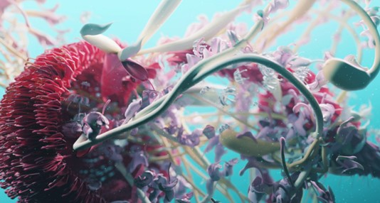
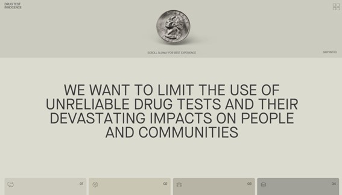
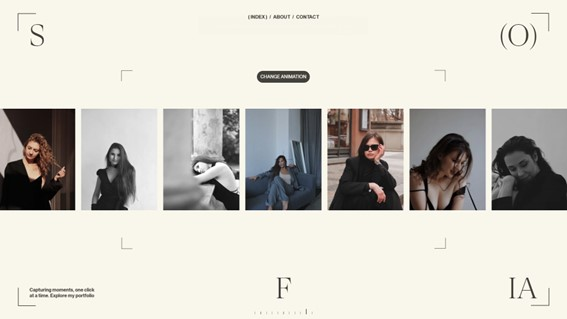
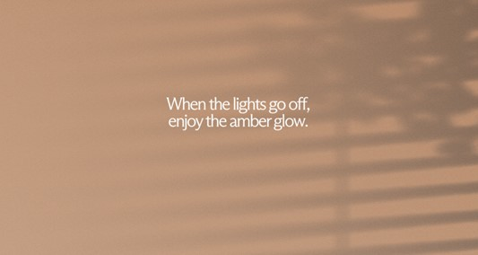

DISEÑO INTERACTIVO
BEMO
Alphamark
La web de Bemo destaca por su interactividad respecto al cursor del ratón que es el que guía toda la experiencia por la web mostrando imágenes en movimiento que invitan al usuario a quedarse.
MONOLITH STUDIO

Artemii Lebedev
La web de Monolith utiliza el juego de la rueda del ratón para interactuar con el usuario.
DRUG TEST INNOCENCE
Denys Koloskov
Andriy Drobovych
Anastasiia Ostapenko
Vlad Taran
La web de Drug Test Innocence fluye a raíz de los movimientos del cursor, lo cual permite una interacción activa con el usuario.
SOFIA SHCHERBAK
Roman Stets
Leonid Kostetskyi
La web de Sofía utiliza el juego de la rueda del ratón como parte del carrusel de fotografías.
DAILIGHT COMPUTER
Basement Studio
Esta página web fluye con el usuario de forma que el elemento protagonista va girando con la información haciendo una experiencia visual atractiva.